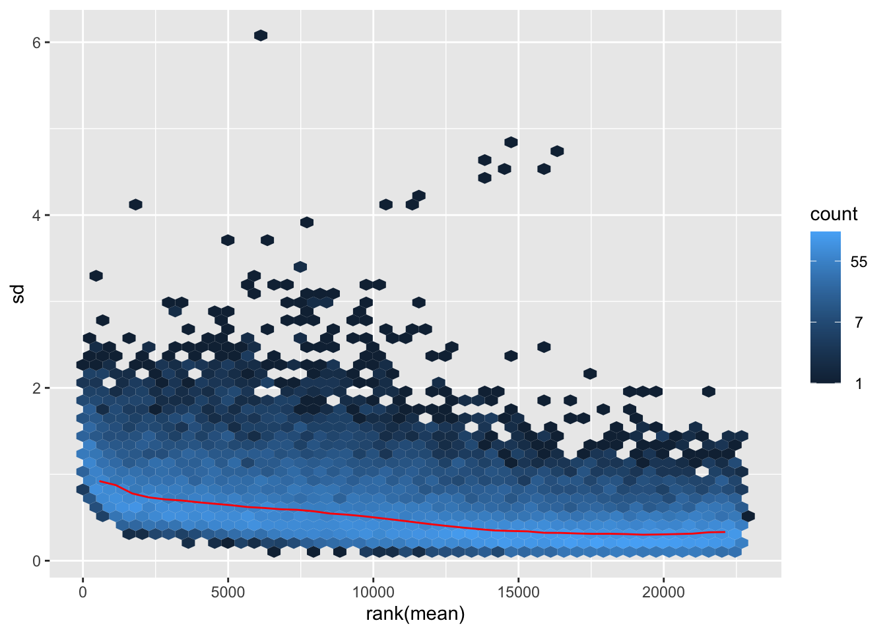

Day 2
Objectives
- Learn about data normalization
- Learn about the
DESeq2package - Explore different normalization methods
- Normalize the data with functions provided by the
DESeq2package - Perform diagnostic and exploratory analysis on the data
Data Normalization for bulk RNA-seq
Why Do We Need It?
Normalization is the process by which we try to conform count data to make it comparable across samples and even across different genes. This is done to ensure that all of the uninteresting differences between genes are minimized in favor of the interesting biological differences that we want to highlight.
The main factors to take into account when normalizing data are:
- Sequencing Depth:

Differences in sequencing depth (total number of reads in a sample) can cause genes to appear differentially expressed just due to technical reasons.
- Gene Length:

Differences in gene length means that longer genes are prone to have more reads coming from them, therefore we need to normalize also for this aspect while processing data.
- RNA Composition:

Differences in RNA composition are also causative of technical artefacts which can skew the analyses. Differences in the number of genes expressed between samples and the number of differentially expressed gene across samples can greatly and negatively impact normalization methods In the example, the majority of counts for sample A is related to the DE gene and therefore this might cause other genes to be normalized by this high number of counts, resulting in them appearing to be expressed at a lower level as opposed to the same genes in sample B.
Normalization Strategies
During the years, many approaches to data normalization have been attempted and are summarized in the table below. You can see that they try to tackle each one of the issues we highlighted above.
| Normalization Method | Accounted Factors | Description |
|---|---|---|
| CPM (counts per million) | Sequencing depth | Counts scaled by total read number |
| TPM (transcripts per million) | Sequencing depth and gene length | Counts per length of transcript (kb) per million mapped reads |
| FPKM/RPKM | Sequencing depth and gene length | Counts per kilobase of exon mapped reads per million mapped reads |
| DESeq2’s median of ratios1 | Sequencing depth and RNA composition | Counts are divided by a sample-specific size factor |
| edgeR’s trimmed mean of M values2 | Sequencing depth, RNA composition and gene length | Weighted trimmed mean of the log ratio of expression between samples |
Out of all these, we will use one of the more advanced ones provided in the DESeq2 package which will be now introduced.
The DESeq2 Package
Introduction
One of the main interests behind performing a bulk RNA experiment is understanding which genes are more or less expressed across a set of conditions of interest, so we will compare gene expression levels and statistically assess and quantify differences arising between the conditions represented by our categories of samples. In this section we will start getting a feel for what DESeq2 is and how to use it to perform normalization and differential expression analysis on our bulk RNA seq data.
üí° Detailed explanations of the statistical procedures implemented in the package are available in the package‚Äôs vignette.
We will start by loading the package that we installed in yesterday’s initial “setup” section:
# Load the package
library(DESeq2)The package contains many functions which are very helpful when dealing with tables of count data, we can inspect them all by typing the following command:
# This should open a popup window in the lower right part of the screen displaying the functions in the package
??DESeqIn the sections below, we will follow the standard analysis workflow suggested by the DESeq2 developers.
Create a DESeqDataSet object
In order for the package to read and understand our data and correctly perform the analysis, we need to organize our data in a way that the functions of the package can handle. This new object that we are going to create is called DESeqDataSet and there is a utility function to create one starting from the ingredients we currently have, (1) a table of counts (our matrix), (2) a table with sample information (our coldata) and (3) one last thing that we need to decide in order tell the package what comparisons we value the most, this is called a design formula.
Behind The Design Formula
The design formula should contain the name of a column of interest in our table of samples which stores the information related to the levels (or categories) we want to contrast. Let’s say that we have a dataset with two conditions (condition_1 vs condition_2) that we want to compare. The samples table will look like this, with three replicates for each of the two conditions:
| Sample Code | Patient | Condition |
|---|---|---|
| SA1 | Pt1 | Condition_1 |
| SA2 | Pt2 | Condition_1 |
| SA3 | Pt3 | Condition_1 |
| SA4 | Pt4 | Condition_2 |
| SA5 | Pt5 | Condition_2 |
| SA6 | Pt6 | Condition_2 |
If we are interested in performing a differential expression analysis comparing condition_1 versus condition_2, then our design formula should specify the Condition column.
üí° What is the column that we are interested in when specifying the design formula using in our
samplestable?
Now that we also understand the design formula, we can create the DESeqDataSet object with the data that we loaded beforehand, but first we need to check that the columns of the counts table are in the same order of the rows of the sample table, this is important since we want to be sure that the right levels of expression are associated to the right sample.
all(rownames(samples) == colnames(counts))[1] TRUENow we are sure about that we can actually build the object:
# Create a variable containing the design formula
design_formula <- ~ Donor + SampleGroup
# Create a `DESeqDataSet` object and call it dds
dds <- DESeqDataSetFromMatrix(countData = counts,
colData = samples,
design = design_formula)Great! You have created a DESeqDataSet object which we called dds, this contains all the information related to the counts table and the sample information table in one spot.
Filtering genes
We can the inspect the size of our dds object to check how many genes and samples we have, you can see that this mirrors exactly the counts table that we had previously before incorporating it into the object.
dim(counts(dds))[1] 62854 16üí° Notice how we used
DESeq2’s functioncounts()to access the table of gene counts within theDESeqDataSetobject.
Now we can start removing some genes which are expressed at low levels. This action is justified both from the biological and the statistical points of view. Biologically, lowly expressed genes are less interesting while statistically, they do not provide enough sampling power to confidently test them for differential expression. In the following chunk we filter our dds object by keeping only genes (rows) which have at least 10 detected counts when summing across all samples.
dds <- dds[rowSums(counts(dds)) >= 10,]üí° This is somewhat of an ‚Äúeasy‚Äù filtering strategy, there are many more complex ones available but sometimes it‚Äôs best to keep things simple!
Let’s check how many genes we’re left with after filtering:
dim(dds)[1] 31737 16You can see that we have cut the number of genes in our dataset by almost half, now we have 31737 genes.
Normalizing Count Data
As we have discussed above, normalization is an integral step to the downstream analysis of bulk RNA-seq data. In this section we will normalize our data using the estimateSizeFactors function of the package. This function creates a value for every gene (a pseudovalue) by taking the geometric mean of expression values across samples for that specific gene and then dividing each value by this new computed pseudovalue. This function returns a normalized table of values which is identical in shape to our original counts table as we will see.
# Call the function to normalize count data
dds <- estimateSizeFactors(dds)We can check the values of the computed size factors by doing the following, note how there are as many size factors as there are samples:
sizeFactors(dds)| . | |
|---|---|
| BSSE_QGF_204446 | 0.9679699 |
| BSSE_QGF_204447 | 0.8817713 |
| BSSE_QGF_204448 | 1.2034053 |
| BSSE_QGF_204449 | 1.0502422 |
| BSSE_QGF_204450 | 1.2141002 |
| BSSE_QGF_204451 | 1.0913873 |
| BSSE_QGF_204452 | 1.1474634 |
| BSSE_QGF_204453 | 1.0950554 |
| BSSE_QGF_204458 | 0.9270823 |
| BSSE_QGF_204459 | 0.8959534 |
| BSSE_QGF_204460 | 0.8036038 |
| BSSE_QGF_204461 | 0.8165707 |
| BSSE_QGF_204462 | 0.9341968 |
| BSSE_QGF_204463 | 1.0681170 |
| BSSE_QGF_204464 | 1.1779602 |
| BSSE_QGF_204465 | 1.0230975 |
The results of the normalization are accessible by using the following code, we will save the normalized values in a different variable that we will call normalized_counts, normalized = TRUE tells DESeq2 to fetch the normalized version of the count table that we have just created above:
normalized_counts <- counts(dds, normalized = TRUE)üí° NOTE: Although
DESeq2does not use normalized counts as input (the normalization process happens inside automatically), the normalized counts we just generated are definitely useful when plotting results and performing clustering.
Transforming Count Data
After we have normalized our data, we need to perform a transformation. There are many ways to transform count data but all of them achieve the goal of removing the gene-wise dependence between variance and mean of expression values across samples (something called homoscedasticity) in order to highlight interesting and biologically relevant expression trends even for genes expressed at lower values. We transform the data using a function provided in the DESeq2 package called rlog which stands for regularized logarithm, without getting too much into the details of the workings of the function, we will transform the data and then look at how the gene-wise relationship between the mean and variance in our normalized data changes before and after the transformation.
The following code plot the mean/standard deviation relationship before the transformation.
library(vsn)
# Plot before data transformation
meanSdPlot(assay(dds))
Transform the data and then plot the mean/standard deviation relationship after the transformation.
# Transform the data (watch how we create a new variable for it)
rld <- rlog(dds)# Check out the transformed values (notice how we now have floating point values and some are even negative!)
head(assay(rld))| BSSE_QGF_204446 | BSSE_QGF_204447 | BSSE_QGF_204448 | BSSE_QGF_204449 | BSSE_QGF_204450 | BSSE_QGF_204451 | BSSE_QGF_204452 | BSSE_QGF_204453 | BSSE_QGF_204458 | BSSE_QGF_204459 | BSSE_QGF_204460 | BSSE_QGF_204461 | BSSE_QGF_204462 | BSSE_QGF_204463 | BSSE_QGF_204464 | BSSE_QGF_204465 | |
|---|---|---|---|---|---|---|---|---|---|---|---|---|---|---|---|---|
| ENSG00000229851 | -0.3526715 | -0.2010792 | -0.3602817 | -0.3555970 | -0.2399632 | 0.0847179 | -0.3586727 | -0.2279047 | -0.3510900 | -0.0739337 | -0.1890122 | -0.3463143 | -0.2084209 | -0.3561915 | -0.0278781 | -0.2197011 |
| ENSG00000228459 | 0.6365877 | 1.0374420 | 0.8520685 | 0.9875220 | 0.8502031 | 0.8730573 | 0.6243727 | 0.8723249 | 1.2186542 | 0.6423624 | 0.6506968 | 0.9392950 | 1.3012398 | 0.6294317 | 0.8565987 | 0.9948364 |
| ENSG00000182888 | 4.2882919 | 4.3946526 | 4.6839023 | 3.8792719 | 4.2302617 | 3.9535142 | 4.3661274 | 4.0408208 | 4.7312951 | 4.2639791 | 4.3844344 | 3.9801799 | 4.3140752 | 4.2895333 | 4.2845088 | 4.4216270 |
| ENSG00000286431 | 4.9014443 | 5.1148822 | 3.9461274 | 5.1565737 | 4.5110129 | 5.4814516 | 4.4043954 | 5.0560408 | 4.8115883 | 5.1016428 | 4.0314676 | 5.4787837 | 5.5748849 | 5.4050681 | 5.5932858 | 5.8469916 |
| ENSG00000237490 | 0.3883848 | 0.5266944 | 0.3600419 | 0.2513714 | 0.3589418 | 0.4831765 | 0.4733968 | 0.3720291 | 0.6242683 | 0.6332632 | 0.6624091 | 0.4121075 | 0.3932301 | 0.2505595 | 0.3627161 | 0.2526425 |
| ENSG00000101846 | 7.4157210 | 7.0617741 | 6.9775835 | 6.9710935 | 7.2251375 | 6.7612170 | 6.4012497 | 6.8805197 | 7.4628180 | 7.0709712 | 6.7358128 | 7.0828085 | 7.9416669 | 7.5904718 | 7.4141406 | 7.3517593 |
| ENSG00000285679 | 3.1807531 | 3.0012482 | 3.7956542 | 3.9582976 | 2.5033603 | 3.1781599 | 3.3659313 | 3.3445709 | 2.8900663 | 3.2236691 | 3.0459007 | 3.2022524 | 3.4436592 | 2.9118579 | 3.7138348 | 3.4876301 |
| ENSG00000219870 | -0.9180949 | -0.7722889 | -0.7014739 | -0.7917121 | -0.7029654 | -0.9207645 | -0.6933566 | -0.9208373 | -0.7779793 | -0.9137609 | -0.9060463 | -0.9071815 | -0.9167252 | -0.9202945 | -0.8037739 | -0.9193429 |
| ENSG00000101849 | 11.7260434 | 11.9162085 | 11.3789329 | 11.6056330 | 11.7365594 | 12.0440052 | 11.7093709 | 11.8305500 | 11.4933369 | 11.7031860 | 11.5560969 | 11.5576538 | 11.6527863 | 11.9395408 | 11.6311480 | 11.7118694 |
| ENSG00000047644 | 12.1678896 | 12.2710704 | 11.7648111 | 12.2494452 | 12.2612293 | 12.2261545 | 12.1440675 | 12.3066751 | 12.2295272 | 12.2089019 | 12.1077662 | 12.3206846 | 12.2239945 | 12.3466937 | 11.8984296 | 12.3830057 |
# let's plot the transformed values
meanSdPlot(assay(rld))
üí° It is clear how now genes with high mean expression values (on the right) are comparable in terms of standard deviation to genes with lower mean expression values (on the left).
Data Quality Visual Assessment
One way to understand trends in our data and the present of poor quality or outlier samples is to perform exploratory analyses through visualization. In R in general, data visualization is aided by the presence of many packages (on top the basic plotting functionality) which can handle diverse kinds of data visualization tasks (from traditional plots to visualizing tabular data through heatmaps). We will encounter two of these packages, one is ggplot2 and the other one is pheatmap.
Clustering
One of the main strategies for checking the consistency of our dataset is to cluster samples based on their complete expression profile (which as you might recall consists of 31737 genes in our dataset). This will allow us to spot the presence of outliers in the data and understand if we see consistent profiles of gene expression across replicates, which we expect. Use the code below to plot a heatmap of normalized expression values for our samples. Since plotting the full expression table can be computationally expensive, we might want to subset it to the 200 top expressed genes in the dataset.
library("pheatmap")
# Take the top 200 genes in the dataset
select <- order(rowMeans(counts(dds,normalized=TRUE)),
decreasing=TRUE)[1:200] # Select number of genes
# Create another table for annotating the heatmap with colors
df <- as.data.frame(colData(dds)[,c("Donor","SampleGroup")])
# Draw the heatmap using the `pheatmap` package
pheatmap(assay(rld)[select,], cluster_rows=FALSE, show_rownames=FALSE,
cluster_cols=TRUE, annotation_col=df)
üí° What type of assessment would you make about the consistency of the samples across these top 200 genes? Do they cluster (a synonym for similar) based on the donor or on the biological condition of our interest?
Sample-to-sample Distances
Another way to get a sense of the global relationship between samples is to check for how distant samples are between themselves. This analysis of pairwise distances looks at the expression value of all 31737 genes in the dataset and determines which samples have a more or less similar or different expression value for each. We expect biologically similar samples to have very little difference.
library(RColorBrewer)
# Compute distances
sampleDists <- dist(t(assay(rld)))
# Organize
sampleDistMatrix <- as.matrix(sampleDists)
colors <- colorRampPalette( rev(brewer.pal(9, "Blues")) )(255)
# Plot with `pheatmap`
pheatmap(sampleDistMatrix,
clustering_distance_rows=sampleDists,
clustering_distance_cols=sampleDists,
color = colors,
annotation_col = df)
üí° What type of assessment would you make about the heatmap you just produced? Which CD8 T-cell populations are mostly similar in terms of overall gene expression profile? Does a particular population stand out?
Principal Component Analysis (PCA)
Another useful approach for understanding the main variability axes in our data is to compute and plot a PCA. Without getting into the details, PCA takes our expression data and outputs its principal components, which encode the main sources of variability in the data. Ideally, we want the samples have variability caused by the biological effect of our interest (in this case the differences between CD8 T-cell populations), but this might not be the case. By plotting and coloring the points by different covariates (i.e. donor or cell type) we are able to understand where the variability comes from and if there is any detectable batch effect. Use the code below to generate two scatter plots of PCA coordinates and color them to understand what causes the variability in the data.
library(ggplot2)
# Calculate principal components and percentage of variance
pcaData <- plotPCA(rld, intgroup=c("Donor","SampleGroup"), returnData=TRUE)
percentVar <- round(100 * attr(pcaData, "percentVar"))
# Plot (this time with ggplot2!!)
ggplot(pcaData, aes(PC1, PC2, color=SampleGroup, shape=Donor)) +
geom_point(size=3) +
xlab(paste0("PC1: ",percentVar[1],"% variance")) +
ylab(paste0("PC2: ",percentVar[2],"% variance")) +
coord_fixed() +
theme_classic()
üí° What can you say about this PCA? Are the samples positioning themselves based on the donor or their biological condition? What is the most extreme group of samples? How does this information relate to the other plots we produced above?
Now that we have plotted all the main diagnostic information related to the dataset and we have a bit of a grasp of it, we can start thinking about testing for differentially expressed genes.